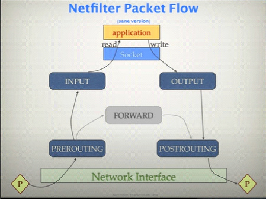
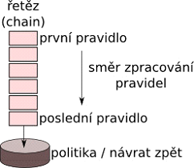
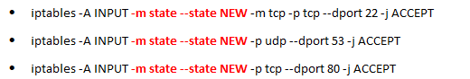
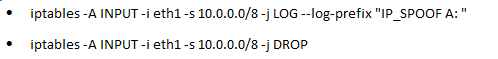
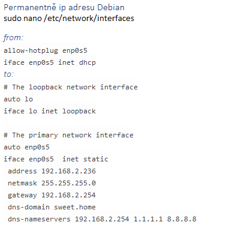
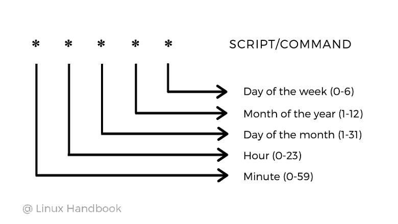

OS Linux - Vzdálená správa Firewall - konfigurace, ovládání síťových zařízení. Naplánované úlohy, LOG soubory.
Vzdalena sprava
Vzdalenou spravu linux zarizeni nebo jineho zarizeni jako mohou byt switch nebo router budeme nejcasteji provadet za pomoci SSH (Secure Shell) pres port 22. Pomoci cmd se lze pripojit prikazem ssh nasledujicim zpusobem ssh uzivatel@adresa
Predchudce ssh byl telnet port 23, take se pouzival na vzdaleen pripojeni pouze nemel sifrovane spojeni. U ssh zajistuje sifrovani TLS. SSH je defaultne nakonfigurovane jako domovsky shell (muzem pres nej posutet programy)
Firewall
Jedna se o filter traffic ktery vychazi nebo vchazi do site ci primo do zarizeni. Muze kontrolovat traffic na urovni paketu (3 vrstve OSI) ci segment/datagram (4 vrstva OSI) nebo primo aplikacni vrstve tedy protokoly jako jsou http, smtp, ftp, ssh (7 vrstva OSI).
Na linuxu je pro kontrolovani provozu nejcasteji pouzivan iptables nebo ufw. Jedna se o programy ktere nam dovolouji nastavovat paket filtry.
Iptables
Pravidla jsou provedena hned po zapsani (pokud by jsme tedy upravovali pravidla vzdalene a zakazali jsme ssh uz se k pocitaci nepripojime dokud ho nekdo nerestartuje).
Pravidla se neukladaji na disk takze jsou po rebootu smazana. Pokud chcem aby pri startu byla nacitana musime si to naprogramovat sami (treba vytvorenim skriptu ktery se bude volat on reboot v cronu)
Pravidla probihaji chronologicky. A nejnovejsi pravuidlo je zapsano na konec.
Pravidla
INPUT ... na vstup pocitac dostava
OUTPUT ... na vystup, positac odesila
FORWARD ... pruchozi, odkud kam pokud jsou dve sitovky (s pomoci masquerade muzeme zajistit preklad IPv4 adresy a tim vytvorit NAT)

Politika
ACCPET ... vse je v poradku komunikace muze probehnout (je propustena)
DROP ... paket je zahozen ale neda o sobe vedet
REJECT ... paket je zamitnut a posle odesilateli o tom info

Pokud se vyhodnoti jeden z predchozich stavu tak jak se dale v chainu pravidla jiz nevyhodnocuji.
Pokud paket projde az na konec a nebude odpovidat zadnemu pravidlu pouzije se na nej defaultni politika. Defaultne je politika nastavena na ACCEPT coz neni uplne dobre.
Problem s znaceni rozhrani. Pokud by jsme odstranili nebo nejak jinak menili sitove rozhrani pocitace mohlo by dojit k prejmenovani.
Integrovane sitove karty jsou pojmenovany eno0, eno1
karty ve slotech PCI Express jsou pojmenovany ens0, ens1
karty s vice konektory pridavaji k nazvum jeste pozici: enp1s0
(volitelne) nazev odvoozeny z MAC adresy: enx78e7d1ea46da Soket obsahuje kombinaci ip adresy a portu
Konfigurace
Stateless vs Stateful (conntrack)
Stateful zna stav kazdeho TCP a UDP pripojeni k systemu
Kdyz prijde novy paket, stateful vy jestli se jedna o cast jiz existujiciho pripojeni
Nevyhody stateful je ze je udrzovani techto informaci velmi narocen a drahe u velmi zatizeneho systemu (okolo 1000 paketu vyse za sekundu)
iptables -A INPUT -i eth1 -p tcp --dport 80 -j DROP
iptables -A OUTPUT -d 1.2.3.4 -j DROP
iptables -A OUTPUT -d 192.168.1.0/24 -j DROP
iptables -A OUTPUT -o eth1 -d 192.168.1.0/24 -j DROP
Stateful vyuziva 4 prikazy
NEW: Paket vytvari nove spojeni nebo se vztahuje ke spojeni, kde dosud neprobehla obousmerna komunikace
ESTABLISHED: paket se vztahuje ke spojeni, kde probiha obousmerna komunikace (tedy jiz k vytvorenemu spojeni)
RELATED: paket vytvari nove spojeni,ale vztahuje se k nekteremu z existujicich (napr. u FTP)
INVALID: paket se nevztahuje k zandemu znamemu spojeni (obvykle je to paket, ktery tu nema co delat, a proto je dobre ho rovnou zahazovat)
Pouziti

Logovani

UFW
Sada skriptu pro IPtables
Pomoci ufw lze nastavit:
Pravidla pro bezici sluzby
Pravidla pro aplikace
Pravidla pro konkretni porty a rozsahy portu
Konfigurace UFW
sudo ufw enable
sudo ufw disable
sudo ufw status
ufw status verbose
Pouziti UFW
udw allow in ssh
Porty a protokoly
sudo ufw allow 53
sudo ufw deny 23/tcp
sudo ufw deny ssh
Logovani UFW
ufw logging on --> zapne (uroven low)
ufw logging off --> vypne
ufw logging LEVEL --> zapne na urcitou uroven
Ovladani sitovych zarizeni

Docasna IP adresa
sudo ip addr add 127.255.255.255/16 dev eth0sudo ip route add default via <gateway_IP>sudo ip route add <network/mask> via <gateway_IP>
ifconfig, ip, route ... vsechny tyto prikazy se pouzivaji pro nastaveni siti
ifconfig .. nastavuje ip jiz zastaraly
route ... na routovaci tabulku jiz zastaraly
ip ... nahrazuje ty predchozi ale puvodni stale funguji po rebootu to neprezije musim editovat nejaky soubor v debianu /etc/network/interfaces a jinak
DNS docasne
echo "nameserver 1.2.3.4" | sudo tee /etc/resolv.conf
Naplanovane ulohy
Vyuziva se kdyz chceme spoustet commandy podle rozvrhu na minuty presne. Crontab stands for "cron table" protoze pouziva cron planovac uloh.
crontab [-u {username}] -l... pro vylogovani aktualniho stavu crontabu (muzem i podle uzivatele) crontab -e... pro editaci crontabu

Priklad pouziti
00 11 16 * * * /home/maverick/bin/incremental-backup ... 00 = 0th Minute (Top of the hour) 11, 16 = 11 AM and 4PM * = Every day * = Every month *= Every day
00 09-18 * * 1-5 /home/maverick/bin/check-db-status ... 00 = 0th Minute (Top of the hour) 09-18 = 10am ,11am, etc. * = Every day * = Every month 1-5 = Mon,Tue,Wed, Thu and Fri (Every weekday)
*/10 * * * * /home/maverick/check-disk-space ... kazdych 10 minut
Specialni slova
Keyword
Equivalent
@yearly
0 0 1 1 *
@daily
0 0 * * *
@hourly
0 * * * *
@reboot
Run at startup
Logovani do souboru
Tee command splits the output of a command so that it can be seen on the display and also be saved in a file. command | tee log.txt
The script command makes a typecript(copy) of everything printed on your terminal: script -a log.txt
This will save output of result into file command > log.txt
Syslog: Syslog je standartni systemovy logovaci demon v linuxu. Muzete pouzit syslog pro zaznam udalosti z ruznych sluzeb a aplikaci do souboru. Syslog konfigurace se nachazi v souboru /etc/syslog.conf nebo /etc/rsyslog.conf, v zavislosti na distribuci. Lze nastavit ruzne urovne logovani (napr. debug, info, warning, error) pro ruzne zarizeni nebo sluzby.
Journalctl: Journalctl je nastroj pro prohlizeni zaznamu v systemd journalu. Systemd je moderni systemovy init system pouzivany ve vetsine modernich distribuci linuxu. Journalctl umoznuje filtrovat a prochazet logy podle ruznych kriterii. Napriklad muzete pouzit prikaz journalctl -f k zobrazovani novych udalosti v realnem case.
Aplikacni logy: Mnoho aplikaci a sluzeb v Linuxu zaznamenava sve vlastni logy. Tyto logy se obvykle nachazeji v ruznych umistenich, jako je /var/log/, a maji specificke nazvy souvisejici s danou aplikaci. Napriklad log apache HTTP serveru se nachazi v souboru /var/log/apache2/error.log